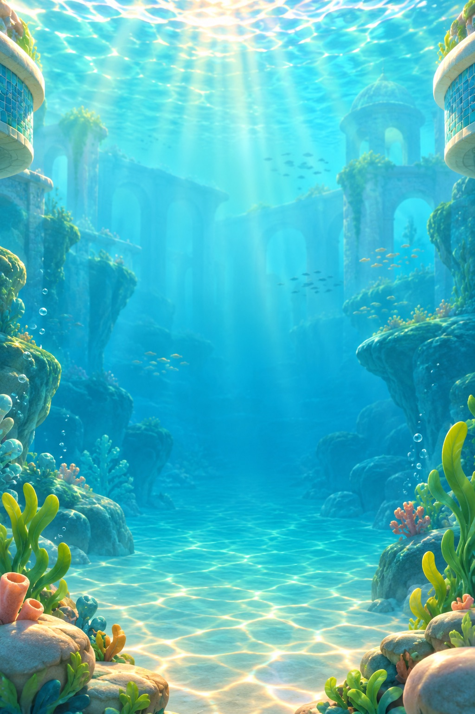
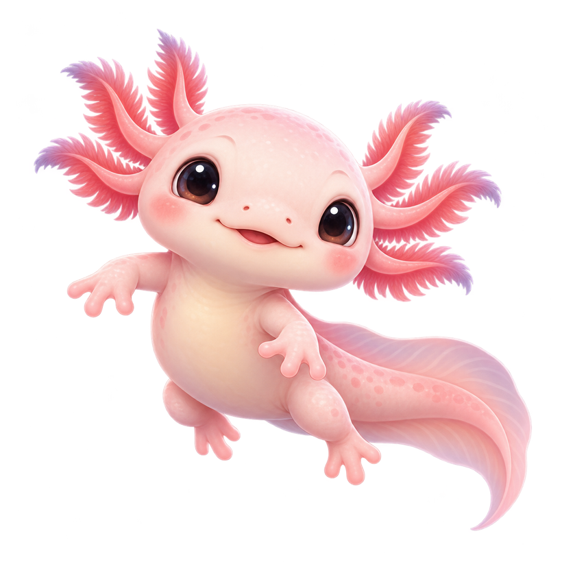
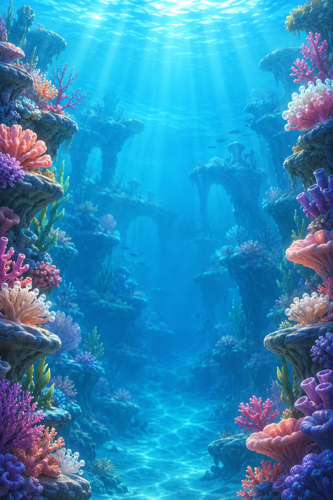
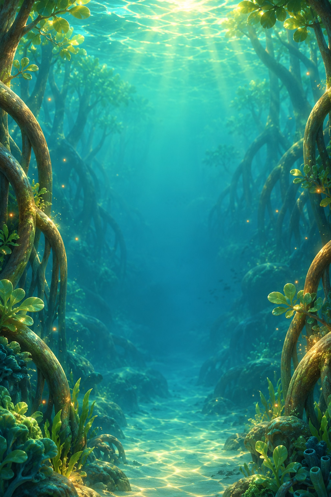

01Sunlit Pool
Floats, springs, and your first treasures. A gentle beginning to a bigger adventure.
Meet Lumi, a curious little axolotl with big plans. Bounce toward the light, gather treasures, and find your own cozy corner of the lagoon.
Meet the lagoonIn development · English & Russian

A sunlit pool becomes a glowing coral garden. Beyond it, a mysterious mangrove forest is waiting.

01Floats, springs, and your first treasures. A gentle beginning to a bigger adventure.

02Glowing anemones launch you higher. Watch out for the open shells.

03Hop across lily pads before they sink. Keep an eye on those jellyfish!
Lumi takes care of the jumping. You choose the landing: slide your finger or tilt your iPhone.
Three lives · coves to return toDouble tap for an extra jump in the air. The higher you climb, the trickier the obstacles become.
Three seconds of speedy flight to carry you toward new heights.
A rare rainbow above the water turns Lumi into a shimmering magnet. Coins swirl straight into your collection.
Pick a favorite color, try on new looks, and leave bubbles, stars, or petals in your wake. Piece together the daily treasure and bring Lumi's home to life with your finds.
Coins grow your powers. Pearls unlock looks, trails, and upgrades. Pearl packs are optional, with no subscription.
Lumi is in development for iPhone. A public version is not available yet. Need help with a test build, or have an idea to share? We would love to hear from you.